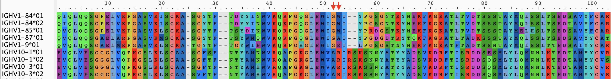
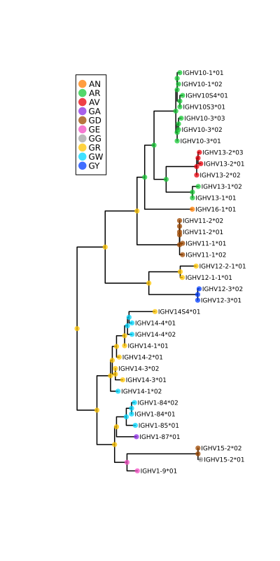
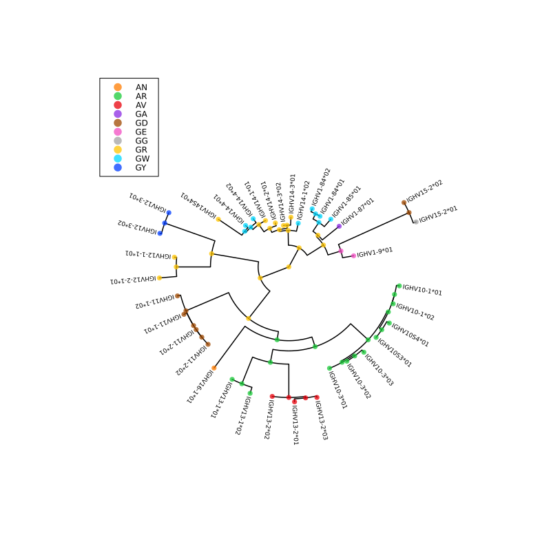
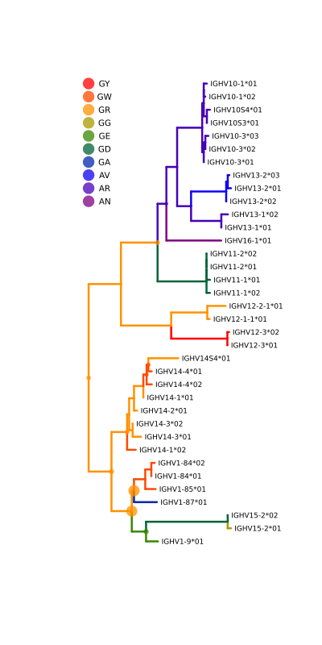

Quick Start
Example 1: Amino acid ancestral reconstruction and visualization
This example reads amino acid sequences from this FASTA file, and a phylogeny from this Newick tree file. A WAG amino acid model, augmented to explicitly model gap (ie. '-') characters, and a global substitution rate is estimated by maximum likelihood. Under this optimized model, the distribution over ancestral amino acids is constructed for each node, and visualized in multiple ways.
using MolecularEvolution, FASTX, Phylo, Plots
#Read in seqs and tree
seqnames, seqs = read_fasta("Data/MusAA_IGHV.fasta")
tree = read_newick_tree("Data/MusAA_IGHV.tre")
#Compute AA freqs, which become the equilibrium freqs of the model, and the initial root freqs
AA_freqs = char_proportions(seqs,MolecularEvolution.gappyAAstring)
#Build the Q matrix
Q = gappy_Q_from_symmetric_rate_matrix(WAGmatrix,1.0,AA_freqs)
#Build the model
m = DiagonalizedCTMC(Q)
#Set up the memory on the tree
initial_partition = GappyAminoAcidPartition(AA_freqs,length(seqs[1]))
populate_tree!(tree,initial_partition,seqnames,seqs)
#Set up a likelihood function to find the scaling constant that best fits the branch lengths of the imported tree
#Note, calling LL will change the rate, so make sure you set it to what you want after this has been called
ll = function(rate; m = m)
m.r = rate
return log_likelihood!(tree,m)
end
opt_rate = golden_section_maximize(ll, 0.0, 10.0, identity, 1e-11);
plot(opt_rate*0.87:0.001:opt_rate*1.15,ll,size = (500,250),
xlabel = "rate",ylabel = "log likelihood", legend = :none)
Then set the model parameters to the maximum likelihood estimate, and reconstruct the ancestral states.
m.r = opt_rate
#Reconstructing the marginal distributions of amino acids at internal nodes
d = marginal_state_dict(tree,m)That's it! Everything else is for visualizing these ancestral states. We'll select a set of amino acid positions to visualize, corresponding to these two (red arrows) alignment columns:

#The alignment indices we want to pay attention to in our reconstructions
motif_inds = [52,53]
#We'll compute a confidence score for the inferred marginal state
confidence(state,inds) = minimum([maximum(state[:,i]) for i in inds])
#Map motifs to numbers, so we can work with more convenient continuous color scales
all_motifs = sort(union([partition2obs(d[n][1])[motif_inds] for n in getnodelist(tree)]))
motif2num = Dict(zip(all_motifs,1:length(all_motifs)))
#Populating the node_data dictionary to help with plotting
for n in getnodelist(tree)
moti = partition2obs(d[n][1])[motif_inds]
n.node_data = Dict([
"motif"=>moti,
"motif_color"=>motif2num[moti],
"uncertainty"=>1-confidence(d[n][1].state,motif_inds)
])
end
#Transducing the MolecularEvolution FelNode tree to a Phylo.jl tree, which migrates node_data as well
phylo_tree = get_phylo_tree(tree)
node_unc = values_from_phylo_tree(phylo_tree,"uncertainty")
println("Greatest motif uncertainty: ",maximum([n.node_data["uncertainty"] for n in getnodelist(tree)]))Greatest motif uncertainty: 0.6104376723068156#Plotting, using discrete marker colors
pl = plot(phylo_tree,
showtips = true, tipfont = 6, marker_group = "motif", palette = :seaborn_bright,
markeralpha = 0.75, markerstrokewidth = 0, margins = 2Plots.cm, legend = :topleft,
linewidth = 1.5, size = (400, 800))
savefig_tweakSVG("anc_tree_with_legend.svg", plot = pl)
pl
#Plotting, using discrete marker colors
pl = plot(phylo_tree, treetype = :fan,
showtips = true, tipfont = 6, marker_group = "motif", palette = :seaborn_bright,
markeralpha = 0.75, markerstrokewidth = 0, margins = 2Plots.cm, legend = :topleft,
linewidth = 1.5, size = (800, 800))
savefig_tweakSVG("anc_circ_tree_with_legend.svg", plot = pl)
pl
#Plotting using continuous color scales, and using marker size to show uncertainty in reconstructions
color_scale = :rainbow
pl = plot(phylo_tree, showtips = true, tipfont = 6, marker_z = "motif_color", line_z = "motif_color",
markersize = 10 .* sqrt.(node_unc), linecolor = color_scale, markercolor = color_scale, markeralpha = 0.75,
markerstrokewidth = 0,margins = 2Plots.cm, colorbar = :none, linewidth = 2.5, size = (400, 800))
#Feeble attempt at a manual legend
motif_ys = collect(1:length(all_motifs)) .+ (length(seqs) - length(all_motifs))
scatter!(zeros(length(all_motifs)) , motif_ys , marker = 8, markeralpha = 0.75,
marker_z = 1:length(all_motifs), markercolor = color_scale, markerstrokewidth = 0.0)
for i in 1:length(all_motifs)
annotate!(0.1, motif_ys[i], all_motifs[i],7)
end
savefig_tweakSVG("anc_tree_continuous.svg", plot = pl)
pl